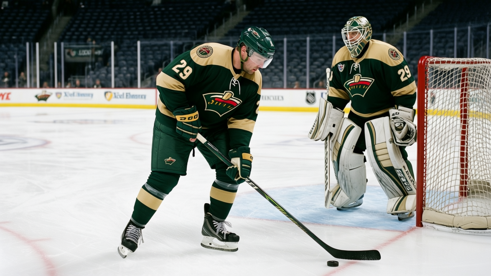
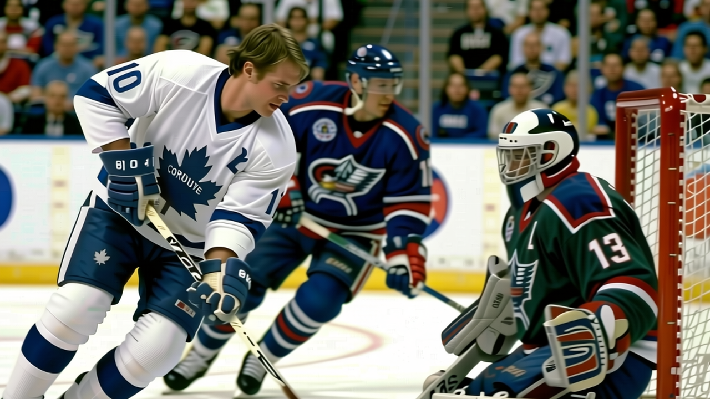

BY E.J. "Ears" Callahan | Tuesday, 7 December 2004
VAN signed Ed Jovanovski for $482,170 on December 2. Two days later, Jovanovski was on the injured list, out until 2005-02-19. He was supposed to fix a blue line that already held Mattias Ohlund (out through 2004-12-14) …
Read moreBY E.J. "Ears" Callahan | Saturday, 4 December 2004
The phone hasn't stopped since the league filed the CGY-to-NJ swap on Tuesday, confirmed by the league record. Four players, no picks, small potatoes. The real supply is somewhere else, and it's bigger than Atlanta.
Read moreBY E.J. "Ears" Callahan | Saturday, 4 December 2004

MIN is on a 10-game losing streak, dead last in the Northwest at 7-16-1 with 17 points, and their two goalies are the two lowest-morale players in the league.
Read moreBY E.J. "Ears" Callahan | Saturday, 4 December 2004
Here's the arithmetic nobody in the ATL front office wants to do in public: you are 5-16-1, last in the league by a full division, your club-average morale is the lowest of all thirty buildings at 84.6, and your two best…
Read moreBY E.J. "Ears" Callahan | Saturday, 4 December 2004

The piece
Read more